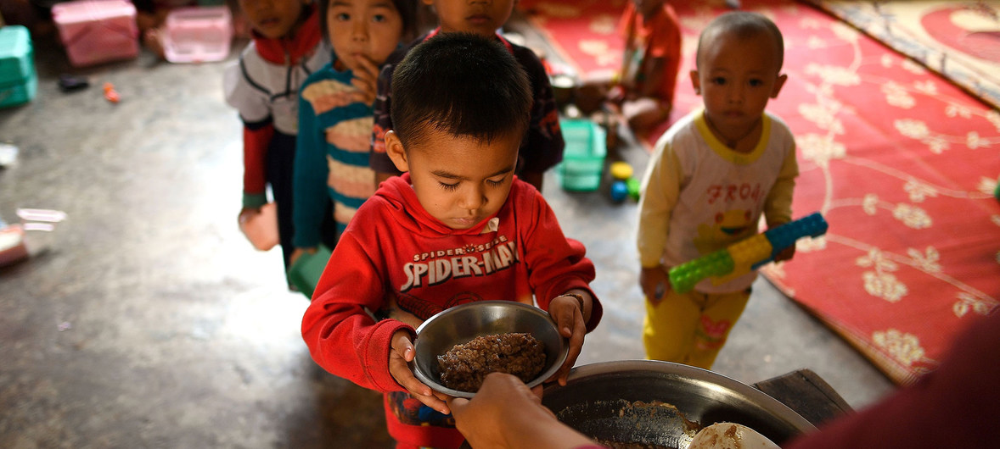

Conheça Algumas Metas
Meta 2.1

"Até 2030, acabar com a fome, e promover uma alimentação saudável garatindo o acesso a alimentos seguros, nutritivos e suficientes durante todo o ano para todas as pessoas, em especial os pobres e pessoas em situações vulneráveis, icluindo crianças."
Meta 2.3
"Até 2030, dobrar a produtividade agrícola e a renda dos pequenos produtores de alimentos, particularmente das mulheres, povos indígenas, agricultores familiares, pastores e pescadores, inclusive por meio de acesso seguro e igual à terra, outros recursos produtivos e insumos, conhecimento, serviços financeiros, mercados e oportunidades de agregação de valor e de emprego não agrícola"
Estatísticas da ONU
É preciso acabar com a fome e promover uma alimentação saudável. Vamos nos unir e lutar para que isso aconteça!